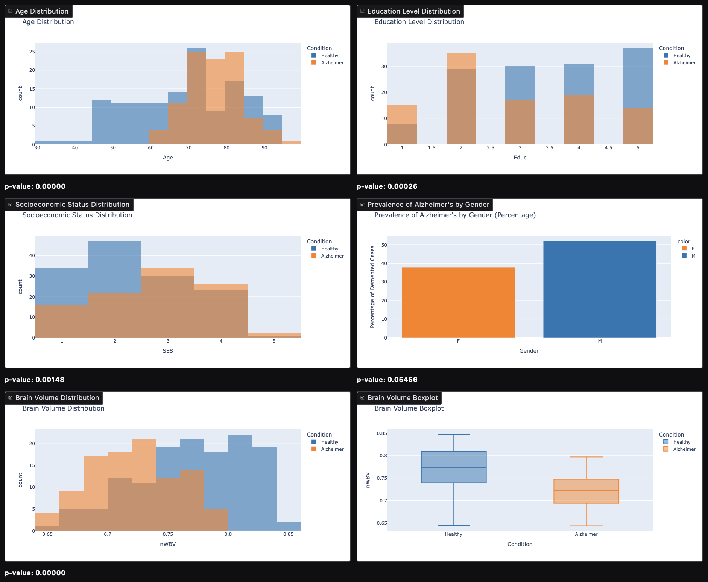
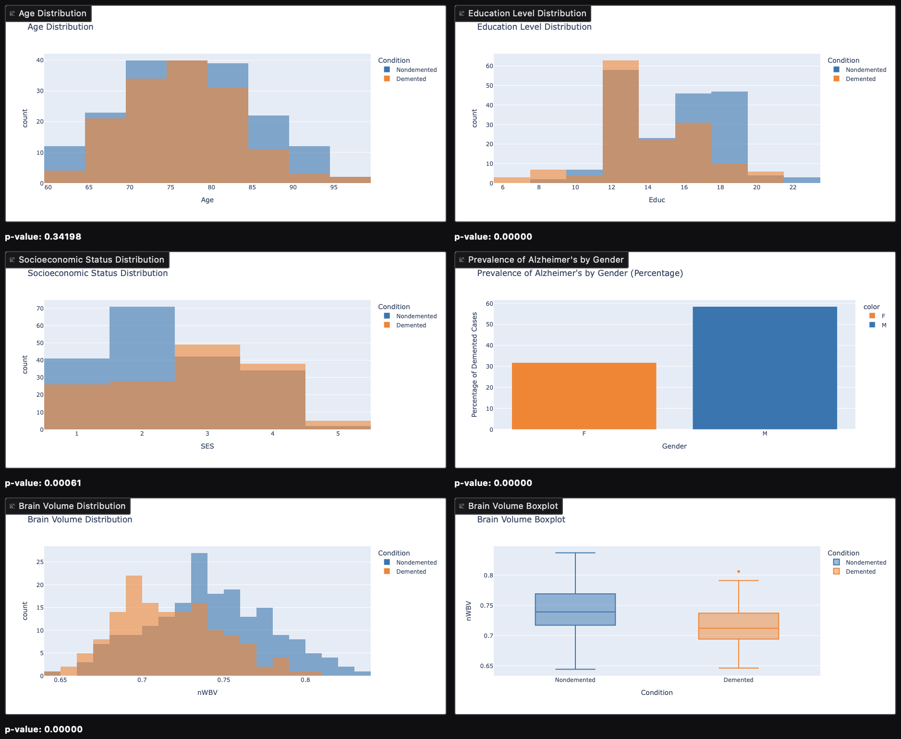

Alzheimer's Disease Analysis
Author: Cidália Castro
Date: 2025
🛠️ Tools Used
Python · Pandas · Gradio · Matplotlib · Hugging Face
🎯 Main Objectives
- Explore relationships between age, education, SES and dementia
- Analyze brain volume changes between healthy and affected individuals
- Evaluate MMSE and CDR cognitive scores in disease staging
- Track dementia progression using longitudinal data
- Prototype predictive models for disease evolution
📊 Key Analyses
- Does education level influence dementia risk?
- Is there a link between SES and cognitive decline?
- Gender-based differences in progression
- Brain volume reduction patterns
- Time to conversion from nondemented to demented
📎 Project Resources
📷 Dashboard Preview

